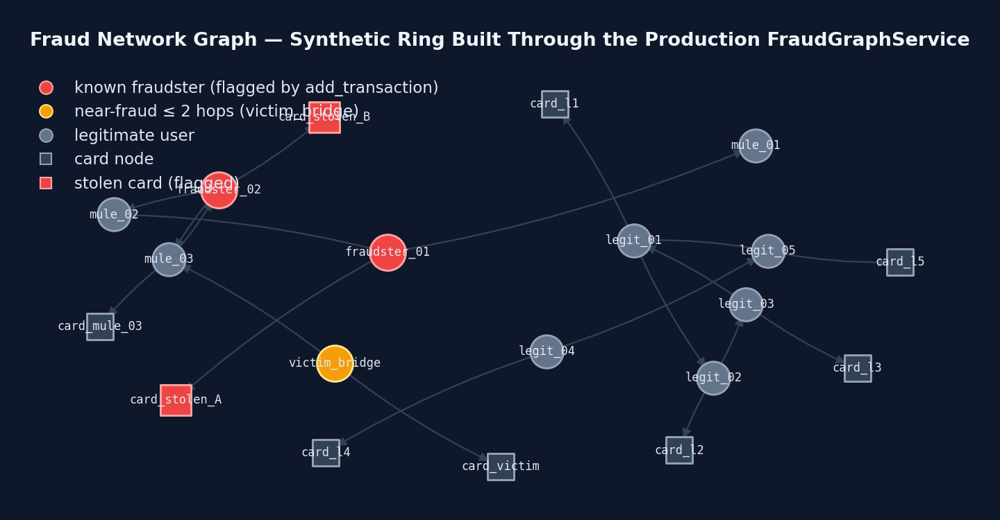

Señales de Red: Grafos y Embeddings
Grafos y embeddings — las señales que viven entre entidades.
Anillos de Fraude: Porque el Fraude Es Social
Los defraudadores rara vez actúan solos — las tarjetas robadas se revenden vía cuentas mulas compartidas y merchants reutilizados. El scoring individual no ve esto; el análisis de grafos sí.
El sistema mantiene un grafo dirigido (NetworkX) cuyas aristas conectan usuarios con los merchants y tarjetas que tocan. De esa estructura derivan:
- Proximidad a fraude: si un usuario transacciona a ≤ 2 saltos de un defraudador conocido, se dispara la regla
near_fraud(+15). - Centralidad de grado: los nodos inusualmente conectados afloran como hubs de coordinación dignos de revisión.
- Higiene automática: los nodos con más de 30 días se podan (los defraudadores conocidos se preservan) para que el grafo quede acotado y vigente.
Es una feature de segundo orden: captura relaciones que ni las reglas ni el ML por-transacción ven, porque la señal vive entre entidades, no dentro de una sola transacción.
Un trigger que no podía dispararse nunca
El trigger de poda era number_of_nodes() % 1000 == 0 — podar cuando el
recuento de nodos cae en un múltiplo exacto de mil. Parece una heurística de batching
razonable y es casi inusable: solo se dispara cuando el grafo aterriza en un número redondo,
lo cual para un grafo orgánico movido por tráfico de transacciones significa más o menos
una vez cada mil añadidos, y nunca por debajo de 1.000 nodos, donde el
módulo es simplemente el propio recuento y no puede ser cero. Un despliegue recién arrancado
habría acumulado nodos indefinidamente sin cota superior y sin ninguna línea de log que lo
explicara.
Ahora es un contador monótono — _adds_since_prune contra un
prune_threshold de 1.000 — que se dispara de forma predecible y legible. La
segunda mitad del bug estaba en la capa de persistencia en Redis: persist solo
emitía únicamente hset/sadd, que son upserts, así que un nodo
calculado como podado en memoria nunca se borraba realmente de Redis. Un
restore posterior resucitaba entonces todo el historial podado en cada
reinicio, y la poda en memoria se deshacía cada vez que el proceso ciclaba. Los nodos
podados ahora se encolan y sus borrados sí se emiten, que es la diferencia entre una cota que
se sostiene y una que solo lo parece.

FraudGraphService.add_transaction() de producción — el mismo camino de
código que ejercita cada request a la API. Las transacciones fraudulentas marcan
remitentes (círculos rojos) y sus tarjetas (cuadrados rojos) como
defraudadores conocidos;
victim_bridge (ámbar) simplemente paga a una cuenta mula y
queda a exactamente 2 saltos dirigidos de uno, así que
get_graph_features() devuelve is_near_fraud=1 y la regla
near_fraud se dispara (+15). El cluster legítimo permanece inalcanzable
(shortest_path_to_fraud=999). Etiqueta honesta: el escenario en sí es
sintético — solo la lógica de detección que corre sobre él es código de producción.
Artefacto: case-study/assets/network-graph.png, generado por
scripts/generate_case_study_charts.py.Cazando Merchants Parecidos con Embeddings
Un truco clásico de fraude es la suplantación: registrarse como AMAZ0N_STORE
o Amaz0n Payments y esperar que las blacklists por coincidencia de strings
pasen por alto el typo. La coincidencia exacta y por distancia de caracteres captura algunos
casos pero falla sistemáticamente ante sustituciones deliberadas.
En su lugar, los nombres de merchants se embeben con sentence-transformers
(all-MiniLM-L6-v2) y se comparan contra diez nombres de merchants confiables
usando similitud coseno. Nombres con similitud superior a 0.85 respecto de
una marca confiable — sin SER esa marca — se tratan como suplantaciones probables y alimentan
la señal de riesgo de merchant.
Los embeddings semánticos entienden que AMAZ0N_STORE está "cerca" de Amazon
en espacio vectorial aunque los strings casi no compartan caracteres. El cómputo corre en su
propio worker async y cachea resultados en Redis con TTL de 1 hora, dejando limpia la ruta
caliente.